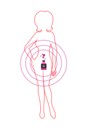
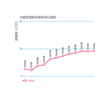
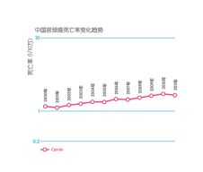

一个细胞引发的“蝴蝶效应”

亚马逊河流的蝴蝶煽动了几下翅膀，美国德克萨斯就掀起了一场龙卷风；爱豆在北京开了场演唱会，上海的交通便陷入了瘫痪；今天早上没有吃包子，华尔街的股市就开始大跌……牵一发而动全身，你永远无法想象一个生活中的小细节会带来怎样的影响，就像你无法想象我们身体里的一个宫颈癌感染细胞，会引发社会上怎样的“蝴蝶效应”……
姑娘们可能都知道，宫颈癌会对女性生殖系统造成巨大的损害。然而，更恐怖的是，它还有转移的风险！宫颈癌生长以后可向邻近组织和器官直接蔓延，阴道、子宫体、盆腔组织、膀胱、直肠、锁骨、淋巴结、肺、肝、骨等，宫颈前后左右上下两侧的组织器官无一幸免，甚至还有转移至全身各处的风险！简直是肆无忌惮、无孔不入！
你以为这就是全部？Noooooooo！除此以外，它还会为社会、为家庭、为女性个人带来沉重的疾病负担。
宫颈癌是最常见的妇科恶性肿瘤之一，在我国女性疾病中发病率仅次于乳腺癌，位居女性生殖系统三大恶性肿瘤（宫颈癌、卵巢癌、子宫内膜癌）之首！由于中国为全球人口最多的国家（其中约有7亿名女性），因此，在中国宫颈癌的负担相当高。目前，中国宫颈癌死亡占全球的10%，觉得很高了对吗？但由于中国肿瘤监测系统大多位于城市地区，所以，中国宫颈癌的负担极有可能被低估了……太可怕惹！
很恐怖对不对？再来给姑娘们看一组数据吧！据估计，2015年我国新发宫颈癌病例98900人（其中城市为53200例，农村为45700例），死亡30500人（其中城市为13600例，农村为16900例）。这里面，45~59岁女性新发病例最多，为45700例，其次为30~44岁组和60~74岁组，分别为28200例和19000例。
与一些常见的癌症不同，宫颈癌多发于工作年龄的女性。正是事业如日中天、家庭幸福美满的时候，突如其来的宫颈癌将这一切打破。不仅对患者及家属的生活质量产生影响，宫颈癌癌前病变及宫颈癌的管理、高度宫颈病变的治疗（包括宫颈锥切）等也造成了沉重的社会和经济负担。对女性个体而言，还可能增加早产、新生儿住院等的风险……能想象吗？这一切，都来自当初那一个小小的受到感染的细胞……
如今，发达国家宫颈癌发病呈下降趋势，而中国却呈增加趋势。原因可能是在进行统计时我国还没有HPV疫苗，HPV感染（特别是在年轻女性中）增加，而且我国的筛查项目覆盖率比较低……这些都警示我们，如果没有有效的干预方式，我国和发达国家宫颈癌疾病负担的差距将会进一步拉大……

值得各位姑娘注意的是，宫颈癌在我国年轻女性中的发病率和死亡率均呈现出增长的趋势！尽早提高防范意识、保护宫颈，将第一个受感染的宫颈癌细胞扼杀在摇篮里，让宫颈癌的“蝴蝶效应”无从发生！
延伸阅读
1）宫颈癌的症状
Link到第7期：谨记宫颈癌的早期症状
2）宫颈癌的危害
Link到第3期：宫颈癌危害女性身心健康部分
Ref
1. 宋伟祥。正确认识宫颈癌。抗癌，2015，28(2): 24.
2. Chen WQ, et al. CA Cancer J Clin. 2016 Mar-Apr;66(2):115-32.
3. GSK内部文件